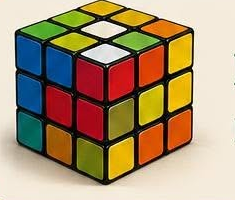

Rubik Ernő magyar építész, formatervező és feltaláló. A világon a leghíresebb találmánya a Rubik-kocka, amelyet 1974-ben készített el. Eredetileg a diákjainak szánta, hogy segítsen nekik a térbeli alakzatok megértésében.
A kocka hamar világsiker lett, és ma már különféle versenyeket is rendeznek belőle, ahol a leggyorsabbak néhány másodperc alatt kirakják!
← Vissza a főoldalra